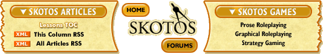

|
It's All About the Audienceby Sandra Powers If you want to run a successful MMO game, you must understand your audience. It doesn’t matter whether your business model is subscriptions or micro-payments or pure advertising revenue, an MMO lives and dies by its player base. And in order to serve your audience successfully, you must know them inside and out. Now it is true that many games in the past have squeaked by with a vague, gut-level understanding of their audience – largely based on the strong similarities between hardcore geek gamer developers and their hardcore geek gamer players. But today, as games reach out to a more diverse audience, that strategy is no longer sufficient. It pays to know exactly who your audience is and exactly what they want out of your game in order to keep them playing and paying. Now defining your audience is probably one of the very first things that you will want to do for a new game, very early in development – probably years before you launch. So why am I talking about it in a column devoted to the live, post-launch perspective? Two reasons: First off, the importance of understanding your audience never passes; there is never a point in the life cycle of your game when understanding the motivations and desires of your player base is not the single most important factor of your success. Secondly, in order to understand your audience you will need to gather data about it. If you are already running a live MMO, you will obviously want to gather data from your existing players. If you are developing a new MMO, or if you are considering a major refocusing of an existing game, then you will want to gather data on the players of existing live games that are similar to yours. Incidentally, allow me to say up front that this article completely side-steps the question of exactly how you obtain this data. That is a topic for another day – and one that deserves its own detailed discussion. So, having waxed melodramatic about the importance of understanding your audience, let’s talk about the details. The most important tool is a basic vocabulary for categorizing players. In short, I like to understand my audiences by examining their characteristics within the following categories:
Motivations: Why do they play?This method of characterizing an audience is familiar to many of us through examples such as Bartle's player types: achiever, explorer, socializer, killer. Most developers today can talk knowledgably about how their game systems satisfy these different types of players in different ways. And yet, Bartle's original focus was not on the motivations of individual players. He defined relatively static roles within the game world – a player is an explorer, or a player is a killer – and how those types interact and balance in the aggregate population. His goal was to help developers balance the overall population of their game in such a way as to be relatively stable over time. As such, his player types are a useful tool for MUD administrators, but perhaps too simplistic for a deep understanding of our audience. These days, I prefer a model of motivations put together by Nick Yee over at the Daedalus Project. These motivations include: relationship, immersion, grief, achievement, and leadership. It is interesting to note that, even given the rather different methodologies, you can see clear correlations between Yee's facets and Bartle's types. One of the most attractive things about Yee's model for me is that it does not define types of players. Rather, it attempts to empirically isolate different factors or facets of motivation that exist simultaneously within the same player. In addition, while Bartle talks about the type of a player shifting over time, Yee talks about a player who logs in on different days with different primary motivations. I like this, of course, because it matches my own experience: some days I want to go out and mindlessly kill things and take their stuff; some days I want to sit in town and game the auction house. Most days I want to do both, but which I actually do depends on external factors like how much time I have, where I am in the game world, how much inventory space I have free, how much money I have, and so forth. Of course, you may have developed your own model of motivations that you find more useful for your own game or genre. The important thing is to be able to answer the question: why are these people playing my game? Obviously this is one of the most important aspects of being able to keep them playing your game. Be careful, however, about using self-reported motivations as the only data when analyzing your audience. It’s not so much that players are likely to deliberately misreport their motivations, but rather that they probably spend less time analyzing their gaming habits than even we do. However, by combining motivations and gaming habits (which we discuss next), we can come very close to a definitive understanding of our audience. Habits: How do they play?The other characterization technique that I use involves analyzing the actual habits of your players. For instance, this category includes the answers to questions such as:
In short, you want to build as accurate and detailed a picture as you can of exactly when and how and what the players are doing in the game. The aggregate data here can be useful, but much more useful is any patterns you can identify. For instance, perhaps you can identify a subgroup of your audience who login once a week on Sunday afternoon, and another subgroup who log in every night at 8 pm. That is incredibly useful information, especially if you can correlate the differences in login times and frequencies with the distribution of activities that each group pursues. And if you can correlate that with their major motivations, then you have gone a long, long way towards complete understanding of your audience. In many ways, data on your players’ habits is the more valuable category of information. It’s real, measurable, accurate, and obviously relevant. But you will still want to integrate this data with motivational data as much as possible in order to avoid the following traps. First, remember that the habits of your players are directly limited by the framework of your game. For instance, if you were to find that 90% of your players spend 75% of their time in game managing their inventory, it might indicate that inventory management is a fun mini-game, or it might indicate that inventory management is incredibly time-consuming. Looking at the reported motivations of your players can help clear up that ambiguity. Similarly, it is very important to remember that a single activity can and generally will satisfy many motivations. For instance, you may find that a majority of your players participate in large-scale raids – but some players may be doing it because it satisfies their desire to provide leadership, while some like the chance to build relationships and others just want to kill the big bad and get the big loot. By teasing out these multiple motivations, you may even find that you can provide alternative activities that satisfy players equally as well for a lower development cost, which can be a real win for you. ConclusionI have really only skimmed the very surface of a huge topic in this article – but it’s a topic that deserves rather more attention than it normally gets in this industry. MMO games live and die by their players, and a deep, fact-based, analytical understanding of your audience can mean the difference between a solid success and a miserable flop. In closing, allow me to present you with a randomly ordered list of bullet-pointed advice:
Pre-launch or post-launch, your audience is the most important part of your game. Give it the critical analysis and creative attention that it deserves. [ <— #3: Think Before You Ship | #5: Efficient Additions —> ] |